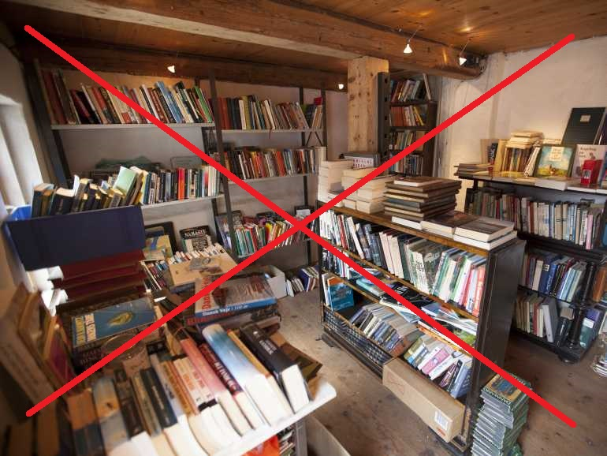
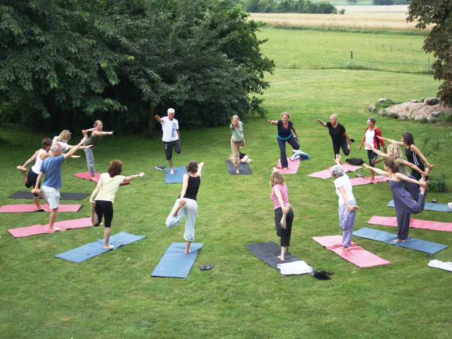
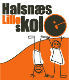

Links ...
På og omkring Røjlegården er der mange spændende aktiviteter:
Torup Bogby
Torup Bogby med en række selvstændige bog-antikvariater plus tilhørende arrangementer: forfattertræf, læsninger, børnearrangementer, musik etc.
Dyssekilde Station
Besøg Dyssekilde Station som bugner af bøger

Bogboden på Røjlegården
Bogboden på Røjlegården i det gamle karlekammer.Salgssteder
Se samtlige salgssteder for Torup Bogby.Kunstsmed
Vores kreative smed arbejder i Røjlegårdens smedje, især med historiske genstande.

Under åben himmel ”Når solen er fremme, rykker vi yogamåtterne ud på den store græsplæne. Det er en helt særlig oplevelse at lave yoga i naturen. Fårene bræger, hanen galer, og solens stråler passer bare så fint til Solhilsenen”.
Dyssekilde Yogacenter
Sommeryoga på Dyssekilde Yogacenter.Under åben himmel ”Når solen er fremme, rykker vi yogamåtterne ud på den store græsplæne. Det er en helt særlig oplevelse at lave yoga i naturen. Fårene bræger, hanen galer, og solens stråler passer bare så fint til Solhilsenen”.
Jytte Strøm
Unik keramik fra Jytte Strøm.Møllekilde Golf
En dejlig børnevenlig 6 huls par 3 bane samt en mere udfordrende par 33 bane på 9 huller til begyndere samt øvede, desuden driving range. Pay and Play.Turisme på Halsnæs
Seværdigheder og aktiviteter på HalsnæsOplev Halsnæs
Den elektroniske kulturguide.
Økosamfundet Dyssekilde
Økokologisk landsby i Torup.
Toruplund
Hotel, konference og fester .Borgerforeningen
Torup og Omegns Borger- og Grundejerforening.
Torup Forsamlingshus
Forsamlingshuset er det lokale mødested for beboere i Torup og omegn. Det lånes ud til offentlige arrangementer og lejes ud til private fester, generalforsamlinger, receptioner og andre arrangementer.

Halsnæs Lilleskole
En skole for både hoved og krop.Himmelstorm Festival
Himmelstorm Festivalen vokser i frugtbar, bæredygtig jord. Helt bogstaveligt. Festivalen hører hjemme i Økosamfundet Dyssekilde, i Torup mellem Hundested og FrederiksværkFiskeriets og Havnens Hus
- Oplevelsesplatformen "Klap en fisk".
- Pyramidepavilionen: Undervisning i ly for vejret.
- Hundested motoren: Se og hør en 2 cylindret Hundested motor.
- Det sorte spil hus: Hundested havn igennem tiderne.
- Det gamle beddingshus: Naturformidlingsstation.